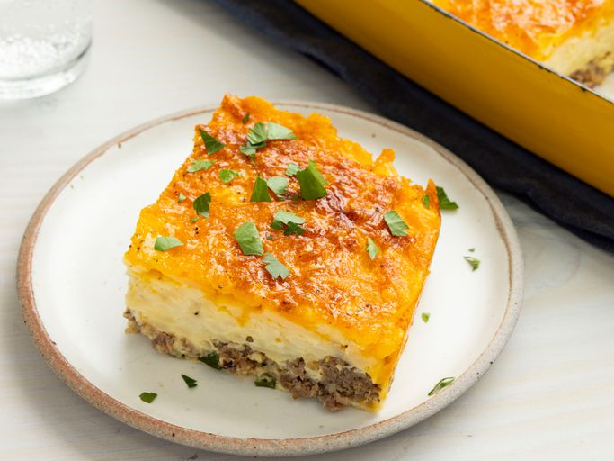

Home
how to bake yum!yum casserole

How to Make Squash Casserole
A good squash casserole starts with good, fresh ingredients. Try to look
for yellow squash that is on the smaller side because they have fewer
seeds and taste sweeter. While this recipe simply calls for an onion,
Southerners know that using a sweet onion will take your casserole to the
next level. However, you can use a yellow onion if that's all you have.
Ingredients
- 4 cups sliced yellow squash
- ½ cup chopped onion
- ¼ cup water, or more as needed
- 35 buttery round crackers, crushed
steps
- Gather all ingredients
- Place squash and onion in a large skillet over medium heat
- Mix cracker crumbs and cheese together in a separate bowl
- Mix eggs and milk together in a small bowl, then add to squash mixture
- Sprinkle with remaining cracker mixture, and dot with 2 tablespoons butter.